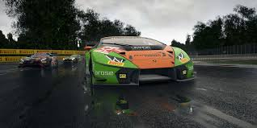
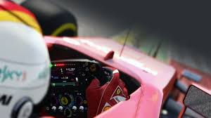
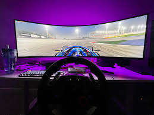

Pagina del desarrollador en Steam
Pagina del desarrollador en Steam
Explora la evolución del simulador de carreras más realista
En el mundo de la simulación de carreras, pocos títulos han logrado impactar tanto como Assetto Corsa. Desarrollado por Kunos Simulazioni, este simulador ha conquistado a los amantes del automovilismo con su enfoque en el realismo y la precisión técnica. Desde su lanzamiento en PC en 2014 y su posterior llegada a consolas, la franquicia ha crecido hasta convertirse en un referente del género, destacando por su fidelidad en la física de conducción y su capacidad de personalización.
Kunos Simulazioni comenzó como un pequeño estudio fundado en 2005 por Marco Massarutto y Stefano Casillo. Inicialmente, su trabajo estaba enfocado en desarrollar simulaciones para empresas y equipos profesionales de automovilismo, lo que les dio un conocimiento profundo sobre la física real de los autos y la dinámica de conducción.
Este expertise se trasladó a Assetto Corsa, un simulador diseñado para ofrecer una experiencia de conducción inigualable. El juego fue desarrollado con el motor gráfico propio de Kunos, aprovechando escaneos láser para recrear circuitos con una precisión milimétrica y trabajando directamente con fabricantes de automóviles para replicar el comportamiento de los vehículos con la mayor fidelidad posible.
Si bien Assetto Corsa debutó en PC, donde rápidamente ganó reconocimiento como uno de los mejores simuladores del mercado, su llegada a consolas en 2016 marcó un punto de inflexión. Hasta ese momento, la simulación más pura parecía exclusiva del ecosistema de PC, pero Kunos logró llevar su propuesta a un público más amplio sin sacrificar su esencia.
pesar de las limitaciones técnicas de las consolas frente a un PC de gama alta, Assetto Corsa se destacó por su fidelidad en la simulación y su exigente curva de aprendizaje, características que lo diferenciaron de títulos más accesibles como Gran Turismo o Forza Motorsport.
Uno de los factores clave en el crecimiento de Assetto Corsa ha sido su comunidad. Desde su lanzamiento, los seguidores del juego han defendido su superioridad en foros, redes sociales y secciones de comentarios, comparándolo con otros títulos de conducción y destacando su enfoque en la simulación realista.
El soporte para mods en PC también ha sido un punto crucial. Gracias a ello, los jugadores han ampliado el contenido del juego con circuitos, autos y mejoras en las físicas, manteniendo Assetto Corsa relevante incluso años después de su lanzamiento
En 2020, Kunos lanzó Assetto Corsa Competizione, una entrega enfocada en las competiciones GT3 y con mejoras gráficas y de física gracias al uso del motor Unreal Engine 4. Aunque más limitado en contenido en comparación con su predecesor, Competizione se convirtió en el simulador oficial del campeonato GT World Challenge, reforzando aún más la reputación de la franquicia en el ámbito profesional.
Kunos Simulazioni se encuentra trabajando en Assetto Corsa EVO, la próxima evolución de la saga. Este nuevo título promete mejoras significativas en el apartado gráfico y en la simulación, con la implementación de tecnologías avanzadas que buscan ofrecer una experiencia aún más inmersiva. Con una base de jugadores fiel y un legado consolidado, Assetto Corsa EVO tiene el potencial de reafirmar a Kunos como líder en el mundo de la simulación de carreras
Un simulador revolucionario con física avanzada, soporte para mods y una amplia gama de vehículos y circuitos.
La secuela centrada en las carreras GT3 con gráficos mejorados gracias al Unreal Engine 4.
La próxima evolución de la saga con tecnología de próxima generación y mayor realismo.
La categoria del Assetto Corsa Competizione para los que les gusta competir de manera mas profesional y participar en torneos